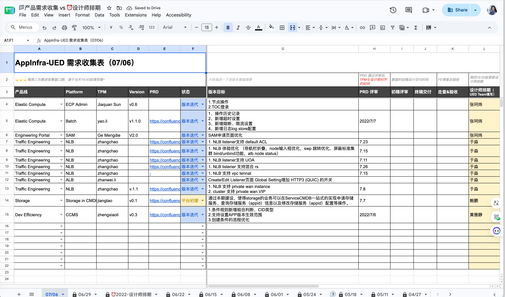

01 / 从个人到团队
从关键设计进入业务，再让团队能够接续。
在 Space 与 DataSuite 等业务中，我先独立处理关键产品设计，从具体任务认识对象、依赖和上下游，再把这些认识整理成产品地图、设计依据与共用资产。随着业务理解和设计基础逐渐成型，带领其他设计师形成稳定的专业支持，随后交给后续 PIC 和设计师接续。
两类业务的起点不同：工程基础设施既有产品初建，也有整体改版和承接迭代；DataSuite 已有完整产品与界面，需要建立专业、系统的设计支持。交接传递的除了方案，还有为什么这样组织、哪些约束需要保留、后续问题应向谁核实。
早期承担虚线 Leader 职责时，我仍在做重点产品设计、跨团队沟通和专业指导。让更多成员接得住工作，需要把个人已理解的信息变成可查、可讨论的内容，也需要持续观察接手中的困难。
02 / 收需与排期
收需和排期，先让不同产品的节奏可见。
当时不同产品线的需求节奏和设计投入差异很大。我在产品与设计群中设置每周定时发送的收需链接，并约定开放和截止时间。PM 在窗口内提交版本目标、PRD 与预期节点，我再整体协调人力。
2022 年团队需求收集表 · 完整截图

放大查看完整原图 ↗从需求进入，到可以承诺的支持
- 01
统一收需
提交产品、版本、目标、PRD 与预期节点。
- 02
评估工作
结合需求体量、复杂度、设计师能力与可用时间判断。
- 03
安排支持
优先交给主责设计师，必要时从公共人力池协调。
- 04
跟踪交付
覆盖需求沟通、UX/UI 设计、终稿交付、走查与验收。
03 / 混合分工
固定主责与灵活调度，可以同时存在。
积累业务知识，建立日常合作关系。
根据需求、能力与负荷协调支持。
固定产品线能积累业务理解、建立合作关系，但需求高峰不同，容易出现有人忙不过来、有人暂时空闲。公共人力池缓解了这种不均衡，却也带来切换和交接成本。因此调度不能只看“谁有空”，还要看对方是否理解这类问题，接手需要多少支持。
对于更适合稳定任务的成员，我会减少频繁切换、固定合作对象；对复杂度高或需要从头建立业务理解的任务，则更谨慎匹配能力。调度时需要同时看见需求高峰，以及成员的学习和支持成本。
早期我们已经同时使用主责与灵活支持；当产品稳定、需求更可预期，固定支持的比重可以增加。调整的信号是需求波动、上下文切换、质量风险和成员能否独立推进。
04 / 共同质量标准
让“哪里不好用”，变成可以核查的问题。
2025 年，我参与团队体验度量框架、设计自查表和质量评审规则的共同建设。它们提供了一套讨论入口：这次要完成什么任务，问题出现在哪里，对用户有什么影响，下一步由谁继续确认。
设计阶段用自查表补齐主支流程、权限、空状态和中断恢复；评审聚焦目标、关键风险与改法；走查核对状态与实现。上线前后的任务观察、访谈和行为数据，则用于检验这些判断。每一阶段选择能回答当前问题的证据。
让评审意见可以被继续处理
- 01
明确任务
说明用户、条件与目标，约定完成任务的标准。
- 02
记录问题
指出发生位置、触发条件与后果，区分观察事实和判断。
- 03
安排修正
优先处理阻断任务、误操作与恢复困难，并明确需要的协作者。
- 04
回到任务复查
沿相同条件重新检查；涉及其他状态时一并回查。
例如，组件都符合规范，但权限不足时输入丢失。评审应具体指出“权限异常后无法继续完成任务”，讨论输入保留与恢复路径，再回到这条分支复查。评分只能帮助暴露分歧，不能替代问题位置、依据和修改建议。
05 / 知识与培养
分工之后，还要帮助成员形成自己的判断。
新人进入技术领域时，需要知道对象与任务怎样相连，也需要知道问题应该找谁核实。我会把概念接到具体工作上，鼓励说清不确定的部分，再带着问题去求证。
产品地图、设计依据和 Infra Design System 的指南为接手提供可查的起点。我会结合正在发生的需求解释适用条件与例外，让成员能够带着问题核实业务、形成自己的方案。新人遇到的困难，也帮助我发现说明和资产还缺少什么。
- 进入实际问题
- 主题指导、业务组件共建和复杂方案评审，让讨论落到正在发生的需求与工程约束。
- 解释判断依据
- 说明当前问题、可选方案与失效条件，让成员能够处理下一次不同的情况。
- 保留项目责任
- 专业支持帮助项目设计师作出决定，作者身份和具体产品推进仍属于对应负责人。
业务设计工作交接后，我仍通过系统资产、业务定制与方案评审提供支持。成员能独立承担工作，表现为能够解释取舍、识别风险，并及时引入需要的协作者。
06 / 阶段与授权
机制需要随阶段调整，授权也需要一起讨论。
随着公司工程基建团队整合，设计团队扩张，支持范围延伸到企业级数据基础设施与 AI。2022 年专职 Manager 到岗负责团队管理后，我转为 PIC，团队也曾分成两个小组、由两位 PIC 分别负责。之后支持范围随业务分工和交接继续变化，后期聚焦设计系统、业务定制支持、专业指导与重点项目。
早期的需求、人力与交付协调，并不包含全部正式人事权限。角色改变时，需要一起重新确认谁作判断、谁协调资源、谁对结果负责。业务交接中也包含组织安排，因此我更关注已形成的认知、资产和支持方式能否被后续负责人继续使用。